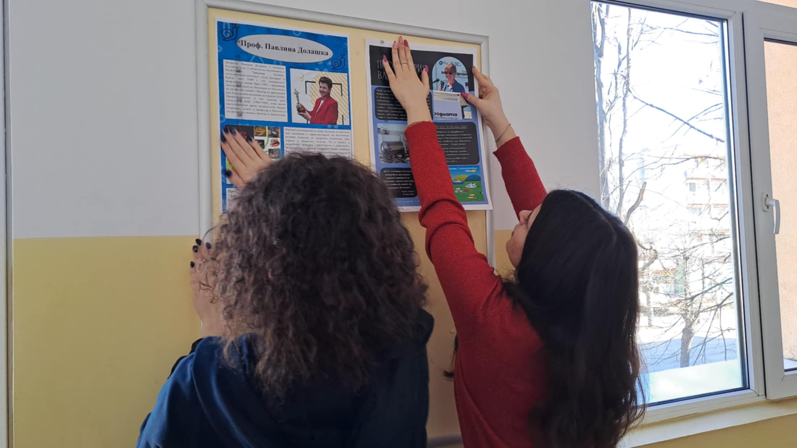
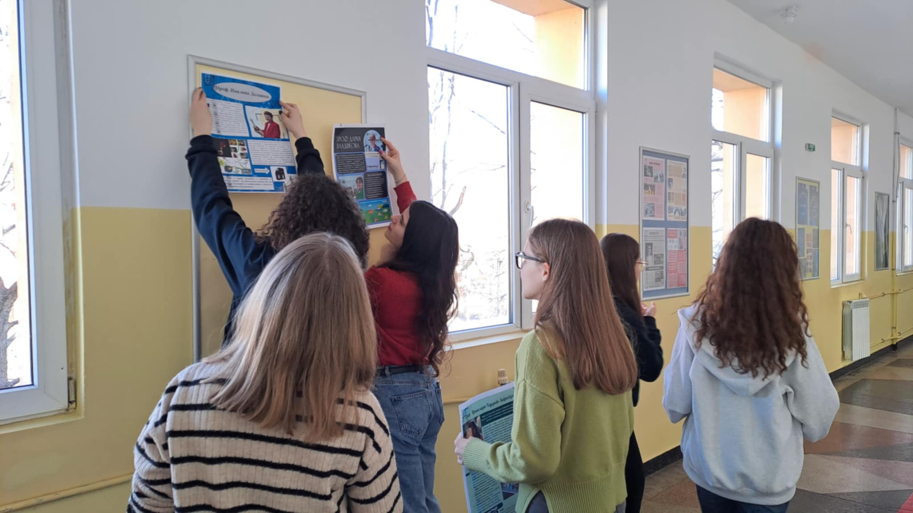

February 11 - International Day of Women and Girls in Science

Proclaimed by the United Nations General Assembly in 2015, the International Day of Women and Girls in Science is celebrated on February 11 each year. This day provides an opportunity to recall the key role women and girls play in the science and technology community and the need to enhance their participation.
The girls from the Erasmus+ club celebrated the day by putting together an exhibition of nine posters they made, telling the stories of famous world and Bulgarian women scientists. Increased participation of women brings diversity, fresh perspectives, and talent in research and scientific undertakings. They have invested their creativity, which women and girls possess, which is important in accelerating the progress of science.
Bridging the gender gap in STEM is essential for leveraging diverse talents to address relevant global challenges, including healthcare and climate change.
The exhibition is related to the realization of the goals set in the Erasmus Accreditation for School Education, in connection with the implementation of Project No.2024-1-BG01-KA121-SCH-000202833, in which the principles of gender equality lie.